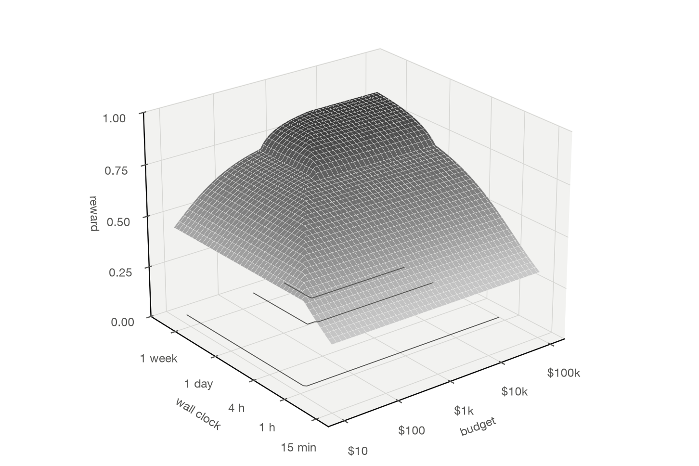

The length and skew targets live only in the human copper, so the human copper has to be the rubric.
Antmicro’s rule files set track widths, diff-pair gaps and clearances per impedance class and layer, but none states a length or skew limit. The matching the designers did exists only as routed copper: tuning patterns and hand-drawn meanders. Each board in this set was fabricated or used, and every target the eval checks is derived from the board the engineers actually shipped.
A board can be 92% routed and still score 0.25 against the human design.
Freerouting 2.5.0, run with no agent on the stripped M.2 PCIe adapter, connected most of the board in 103 seconds. Measured against the human copper it missed the high-frequency intent: widths, skew and matching.
| Board | Tier | Oracle | Routed | Pair skew | Imp. width | Reward |
|---|---|---|---|---|---|---|
| SI test board | easy | 1.00 | 90% | 0.00 | 0.00 | 0.48 |
| M.2 PCIe adapter | easy | 1.00 | 96% | 0.11 | 0.43 | 0.27 |
| HDMI–MIPI bridge | easy | 1.00 | 18% | 0.00 | 0.00 | 0.01 |
| GMSL deserializer | medium | 1.00 | 72% | 0.29 | 0.00 | 0.13 |
| Jetson Orin baseboard | medium | 1.00 | timed out · 90 min under emulation | |||
| RDIMM DDR4 tester | hard | 1.00 | not run yet | |||
| SO-DIMM DDR5 tester | hard | 1.00 | not run yet | |||
| RDIMM DDR5 tester | hard | 1.00 | not run yet | |||
Strip the copper, let the agent route, score it against the board that shipped.
- 01
Strip
The environment fetches the gold board at its pinned commit, removes every track, via, tuning pattern and zone fill, and deletes the original in the same image layer.
- 02
Route
The agent gets the stripped board, its rules, KiCad 10.0.7, Freerouting 2.5.0 and Java 25, and saves the routed board in place.
- 03
Re-fetch
A separate verifier sandbox downloads the gold board again at the same commit and checks its sha256.
- 04
Score
Connectivity, DRC, skew, matching, widths and efficiency are measured against the gold, never against a hand-written target.
placement gate × completion² × (0.30 DRC + 0.25 pair skew + 0.15 length groups + 0.15 impedance width + 0.15 efficiency)
Outcome against budget and wall clock.


| Budget per board | 4 hours | 1 day | 1 week |
|---|---|---|---|
| $100 | 0.71 · 0.61 | 0.78 · 0.66 | 0.78 · 0.66 |
| $1,000 | 0.71 · 0.61 | 0.82 · 0.70 | 0.84 · 0.79 |
| $10,000 | 0.71 · 0.61 | 0.82 · 0.70 | 0.84 · 0.82 |
Spend on parallel CPU and on the evaluator. Buy GPUs only after the solver earns them.
Two minutes on the eval.
Routed is not the same as right: review, tools, eval and forecast
PDF ↓
Paper · arXiv draftRouted Is Not Right: a gold-master benchmark for machine routing of high-frequency PCBs
PDF ↓